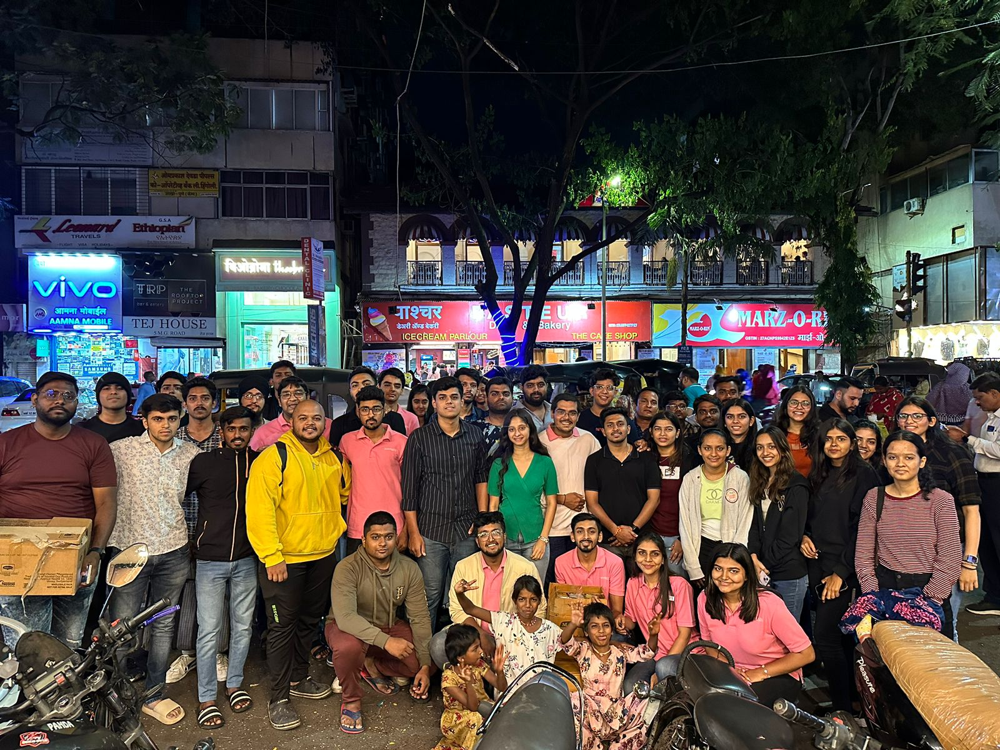
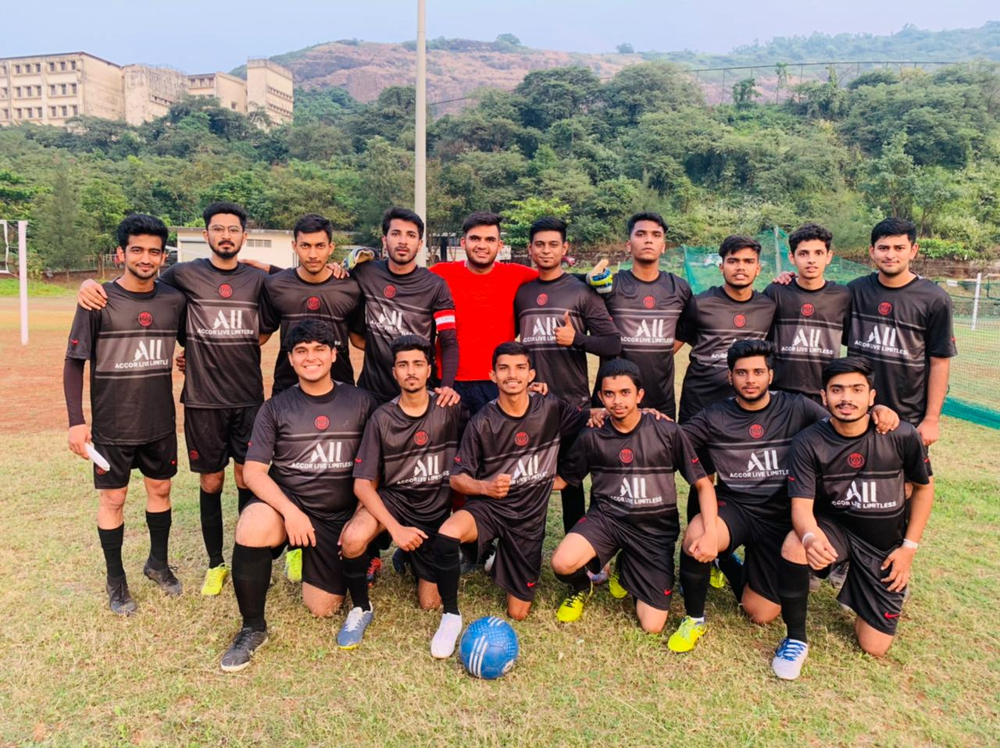

Extra Curricular

Sahayata
Board of Director | September 2021 - September 2023
-
Managed and organized initiatives such as feeding the poor, tree plantation, and providing educational support to financiall challenged children, including teaching children in schools.
-
Coordinated awareness drives, blood donation drives, and thedistribution of essentials like umbrellas during rain and warmclothing in winter to meet immediate community needs.
-
Played an active role in planning, executing, and evaluating programs, ensuring their success and contributing to the growth of the foundation.

Football
Player | 2021 - 2022
-
Participated as a team member in college football, contributing to match strategies and team coordination.
-
Contributed to team spirit and performance by maintaining consistent training, fitness, and skill development.
-
Actively involved in planning and participating in football tournaments, ensuring team growth and success in competitions.